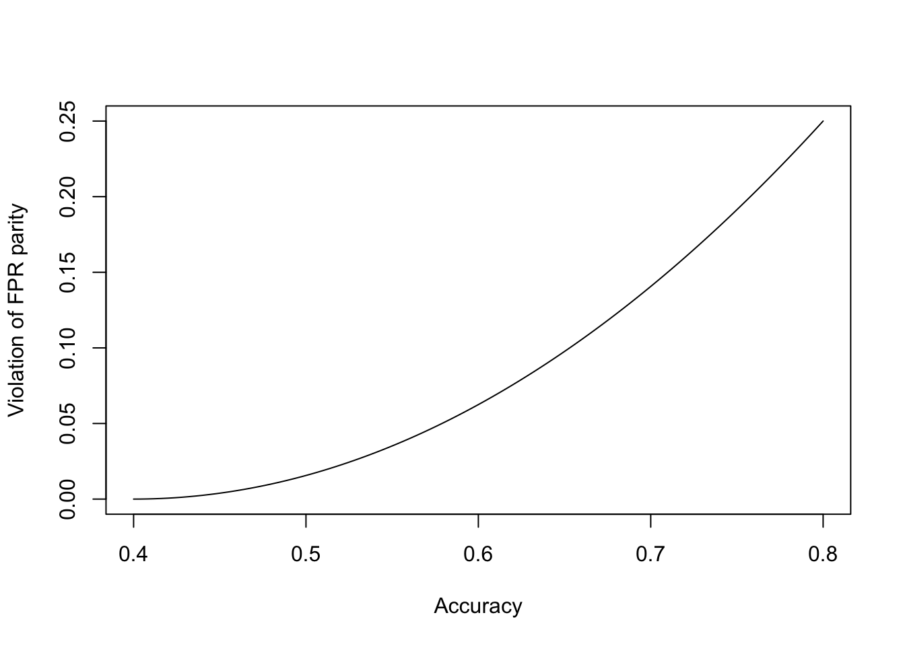

Algorithmic Fairness (Lecture 15)
When we talk about classification problem, we always mean that we’re trying to predict a categorical, usually binary, label, outcome or class \(Y\) from features \(X\) (which may or may not be categorical).
We’ll be a little more telegraphic today than usual.
“Protected attributes”
- Legally mandated in some contexts
- US law generally prohibits discrimination in employment, housing, lending, education, etc., on the basis of race, ethincity, sex, religion, national origin, or age
- See our previous discussions of “disparate treatment” and “disparate impact”
- OTOH there’s nothing in US law against (for example) discrimination by caste
- US law generally prohibits discrimination in employment, housing, lending, education, etc., on the basis of race, ethincity, sex, religion, national origin, or age
- Arguably ethically mandated everywhere
Some notions of “fairness” for classification
- Don’t use protected features directly
- Sometimes called “anti-classification”
- What about strongly-associated unprotected features?
- Have equal error rates across groups
- Sometimes called “classification parity”
- Which error measures, exactly?
- Calibration: everyone with the same score should have the same actual probability of \(Y=1\), regardless of group
- Conditional independence of \(Y\) from protected attribute given score
- This is a very weak requirement (which some systems nonetheless manage to violate…)
Concrete example: Pretrial detention, recidivism prediction
- You don’t get arrested, your screw-up cousin Archie gets arrested
- Court decides whether or not to keep Archie in jail pending trial or let Archie go (perhaps after posting bail1)
- Court wants Archie to show up and not do any more crimes
- \(Y=1\): Archie will be arrested for another crime if released
- \(Y=0\): Archie will not be arrested
- Similarly for failure to appear on trial date, arrest for violence, etc.
- We’ve worked with data like this before
NOTATION
- Archie’s features \(=X = (X_p, X_u)\) where \(X_p\) are the protected features and \(X_u\) are the unprotected ones
- \(Y=\) whether or not Archie will be arrested for another crime before trial
- Or: will show up for trial, will be re-arrested after being released from prison, will default on the loan, …
- Generally, today, \(Y=1\) is the bad case
- \(\hat{Y}(x) =\) prediction we make about someone with features \(x\)
- Here \(\hat{Y}=1\) means “we predict re-arrest” (or recidivism), and so someone paying attention to use would presumably not release this person
- \(\hat{Y}(x)\) can ignore some features in \(x\)
- \(p(x) = \mathbb{P}\left( Y=1|X=x \right)\) is the true risk function
- Note that true risk function isn’t known
- \(s(x) =\) risk score we calculate based on \(x\)
- may or may not be an estimate of \(p(x)\)
“Anti-classification”
Anti-classification means: don’t use protected categories to make these decisions/predictions. To make this useful, we’re going to need to be more precise.
Option I: No direct use of protected features
In the first formalization, the prediction our system makes must be the same for any two inputs with the same features:
Not using protected features means: if we make different predictions for cases \(x\) and \(x^{\prime}\), \(\hat{Y}(x) \neq \hat{Y}(x^{\prime})\), then we must have \(x_u \neq x_u^{\prime}\).
Equivalently, if \(x_u = x^{\prime}_u\), then \(\hat{Y}(x) = \hat{Y}(x^{\prime})\), we can’t make different predictions if two cases just differ in their protected features.
In the risk-prediction context, this would mean that we can’t explicitly look at race, sex, or national origin, say.
Inference from unprotected to protected features
The rule “don’t use the protected features” is often seen as too weak to be satisfying. Sometimes this is for (debated and debatable) ethical reasons2, but there is also the more technical concern, which is that it is often very easy to infer the values of protected features from the values of unprotected features. Thus for instance knowing where someone lives in is a very good proxy for race (as well as for education and income, which are not, strictly speaking, legally protected features).
As a small example, the dot in the next figure shows the census tract where I grew up, in Montgomery County, Maryland, just outside of Washington DC. (The dot is not on my parents’ house.) The inset table shows some summary demographic information for that tract (from 2019) from the Census Bureau. (It’d also be easy to get information about income, housing conditions, education levels, etc.) Even if we know nothing else about someone, knowing that they’re from census tract 23224-24-031-7044.04 allows us to predict their race with 70% accuracy.

Part of the Washington, D.C. metropolitan area, specifically Montgomery County, Maryland. The blue lines are the boundaries between “census tracts”, the geographic area which the Census Bureau uses for data reporting and collection. By design, tracts are supposed to have fairly homogeneous populations of about a few thousand people. The dark dot is in the census tract where I grew up (though not on top of my old house!), and the inset table shows the racial demographics of the tract. Source: [https://geomap.ffiec.gov/FFIECGeocMap/GeocodeMap1.aspx]. (Why does the government agency in charge of maintaining standards for bank examiners have a tool for showing the demographic information of census tracts?)
By way of contrast, here’s a census tract not too far away, but in Prince George’s County, Maryland, also just outside Washington, where we could predict whether or not someone was white with over 90% accuracy:

As before, but for a census tract in Prince George’s County, Maryland.
The fact that knowing someone’s address — not the exact address, just the zip code or the census tract — tells us a lot about their protected categories should be worrying. It might not seem bad to include zip code as a predictor for criminal risk: crime does cluster spatially, for lots of reasons. But saying “We can safely let Archie go, because people from that part of Bethesda are rarely violent” is very close to saying “We can safely let Archie go, because he’s probably white (or Asian)”.
Inferring protected features from web traffic
Fine, you say, no zip codes. But you can learn a lot about someone from their browser history, and “On the Internet, nobody knows you’re a dog”, so what’s the problem?

The classic New Yorker cartoon by Peter Steiner from 1993 (source).
Only, it turns out, they do.
@Goel-Hofman-who-does-what-on-the-web used the full browsing history of about a quarter of a million (US) Web users, primarily to examine how different demographic groups — defined by age, sex, race, education and household income — used the Web differently. If we think of each demographic category as a label \(Y\), and which websites were visited (and how often) as features \(X\), they were primarily interested in \(\mathbb{P}\left( X=x|Y=y \right)\), and how this differed across demographic categories. For instance, people with a post-graduate degree visited news sites about three times as often as people with only a high school degree. (What’s \(X\) and what’s \(Y\) in that example?) It may or may not surprise you to learn that they found large differences in browsing behavior across demographic groups. To steal an example from the paper, men were much more likely than women to visit ESPN, and women were more likely than men to visit Lancome.
But now this can be turned around. Any feature whose distribution differs between two groups can be used to make a classifier which distinguishes those groups with some accuracy. The more features whose distribution differs, and the more that the distributions differ, the better the classifier can be. This means that someone who knows what websites you browse can predict your age, sex, race, education, and household income. To demonstrate this, @Goel-Hofman-who-does-what-on-the-web used the 10,000 most popular websites, creating a binary feature for each site, \(X_i=1\) if site \(i\) was visited at all during the study and \(X_i=0\) if not. They then used a linear classifier on these features (with a with a geometric margin constraint). The next figure shows how well they were able to predict each of those five demographic variables.

Detail of Figure 8 from @Goel-Hofman-who-does-what-on-the-web, showing the ability of a (regularized) linear classifier to predict demographic variables based on web browsing history. Dots show the achieved accuracy, and the \(\times\) shows the frequency of the more common class.
I include this not because the precise accuracies matter — these aren’t the highest accuracies attainable, even with these features — but rather to make the point that this kind of prediction can be done. It doesn’t matter why different demographic groups have different browsing habits, just that those distinctions make a difference. This lets us (or our machines) work backwards from browsing to accurate-if-imperfect inferences about demographic categories.
Now imagine a recidivism prediction system which does not, officially or explicitly, consider sex, but does have access to the defendant’s web browsing history. (No such system exists, to best of my knowledge, but there’s no intrinsic limit on its creation3.) We just saw that sex can be predicted with (at least) 80% accuracy from browsing history. A nefarious designer who wanted to include sex as a predictor for recidivism, but also wanted to hide doing so, could therefore use browsing history to predict sex, and then include predicted sex in their model. A less nefarious designer might end up doing something equivalent without even realizing it, say by slightly increasing the predicted risk of those who visit ESPN and slightly reducing the prediction for those who visit Lancome, and so on down all the websites whose popularity predicts sex. Either designer might, when pressed, say that they’re not claiming to say why ESPN predicts recidivism, but facts and facts, and are you going to argue with the math?
In fact, we can go further. We know that younger people have a higher risk of violence than older people, that poorer people have a higher risk than richer people, that men have a higher risk than women, that blacks have a higher risk than whites4, that less educated people have a higher risk than more educated people5 [@Shadows-of-doubt]. A system which just used Web browsing to sort people on those five attributes could6, therefore, achieve non-trivial predictive power. You can even imagine designing such a system innocently, where we just try to boil down a large number of features into (say) a five-dimensional space, before using them to predict violence, without realizing that those five dimensions correspond to age, sex, race, income and education.
None of this really relies on the features being Web browsing history; anything whose distribution differs across demographic groups will do.
Option II: Decisions must be independent of protected features
All of this motivates a stronger notion of anti-classification: not only should you not explicitly use the protected features, you shouldn’t sneak them in the back via inference from the unprotected features. The cleanest formulation of this I know of comes from @DeDeo-wrong-side-of-the-tracks, from our Department of Social and Decision Sciences, which is this:
\(\hat{Y}(X)\) should be statistically independent of \(X_p\).
@DeDeo-wrong-side-of-the-tracks shows that one way to achieve this is to deliberately distort the distribution of the features. Specifically, instead of the actual joint distribution
\[ \mathbb{P}\left( Y=y, X_u = x_u, X_p = x_p \right) \]
you should use the distorted distribution
\[ \tilde{P}(y, x_u, x_p) = \mathbb{P}\left( Y=y, X_u=x_u, X_p=x_p \right)\frac{\mathbb{P}\left( Y=y \right)}{\mathbb{P}\left( Y=y|X_p=x_p \right)} \]
This particular distribution is the closest one, information-theoretically, to the original \(\mathbb{P}\left( Y, X_u, X_p \right)\) in which the desired independence still holds. Any other distribution where the independence holds is further from the actual distribution, and more easily distinguished from it by a statistical test.
(In practice, though @DeDeo-wrong-side-of-the-tracks doesn’t say this, one way to achieve the distortion would be to fit your model after weighting the data points. The weight of data point \(i\) would be
\[ \frac{\mathbb{P}\left( Y=y_i \right)}{\mathbb{P}\left( Y_i=y_i|X_p={x_p}_{i} \right)} \]
so we give more weight to data points with labels which their protected attributes make relatively unlikely. Since we don’t know the true probabilities, we’d have to estimate them.)
This is an elegant solution but I don’t think anyone except Simon uses it.
“Classification parity”
When people think about fairness as parity, they mean that rates, or error rates, should be equal across groups defined by protected attributes. There are four main versions of this.
Demographic Parity
Demographic parity: \(\mathbb{P}\left( \hat{Y}(X) = 1| X_p \right) = \mathbb{P}\left( \hat{Y}(X)=1 \right)\)
In the recidivism-prediction context, this would mean that we should have equal rates of detention (or release) across groups.
Violations of demographic parity are basically the same as what US law calls “disparate impact”. This is not necessarily illegal, but it’s the kind of thing which needs to be justified by “business necessity”, i.e., showing that it’s really essential to the goal the organization is trying to achieve. Even then, courts or regulators might ask whether there isn’t another way of getting the job done with less disparate impact.
(Thought exercise: Does demographic parity imply that \(\hat{Y}\perp X_p\)?)
Note that implementing demographic parity will often require using different thresholds on \(p(x)\) for each group. As we discussed in class, this creates a tension between disparate impact and disparate treatment.
(The Supreme Court case I mentioned in class, where the New Haven fire department seemed to be put in a double bind of committing one or the other, was Ricci vs. DeStefano of 2009; there is an interesting and thorough discussion in @RTFord-gone-wrong, pp. 107–127.)
Error-Rate Parities
False-Positive Parity
FPR parity: equal false positive rates across groups,
\[ \mathbb{P}\left( \hat{Y}(X)=1|Y=0, X_p \right) = \mathbb{P}\left( \hat{Y}(X)=1|Y=0 \right) \]
In the context of pre-trial detention, this would mean equal detention rates among those who would not have commited a crime if released.
It may (as in that example) be very hard to know what those rates are, a point we’ll return to below.
False-Negative Partiy
FNR parity: equal false negative rates across groups,
\[ \mathbb{P}\left( \hat{Y}(X)=0|Y=1, X_p \right) = \mathbb{P}\left( \hat{Y}(X)=0|Y=1 \right) \]
Concretely: Equal probability of detention among those who would have gone on to commit a crime had they been released
Predictive-Value Parity
PPV/NPV parity: equal positive and negative predictive values across groups,
\[ \mathbb{P}\left( Y=1|\hat{Y}(X), X_p \right) = \mathbb{P}\left( Y=1|\hat{Y}(X) \right) \]
so outcome is independent of protected attributes given the prediction.
Measuring Parity Violations
Because all these different forms of parity say that various rates should be equal, there’s an easy and natural way to see how badly a system violates parity: take the difference in rates. Thus we might define
\[ \Delta_{FNR} \equiv |\mathbb{P}\left( \hat{Y}(X)=0|Y=1, X_p=1 \right) - \mathbb{P}\left( \hat{Y}(X)=0|Y=1, X_p=0 \right)| \]
(If there are more than two groups, we could take the sum of all the pairwise differences, or the maximum pairwise difference, etc.)
Of course, the difference in rates isn’t the only way to go. We could also look at the ratio of rates, and how far that is from 1. In the US, the administrative agencies which enforce anti-disrimination laws generally aren’t interested in disparate impact claims until the success rate for one group drops below 80% of the rate from another; this is a ratio-of-rates standard rather than a difference-in-rates standard.
Calibration
A risk score \(s(X)\) is calibrated, or equally calibrated, when
\[ \mathbb{P}\left( Y=1|s(X), X_p \right) = \mathbb{P}\left( Y=1|s(X) \right) \]
Calibration is equivalent to saying that
\[ Y \perp X_p | s(X) \]
(Can you show this is equivalent?) Notice that this must be true if \(s(X) = p(x) \equiv \mathbb{P}\left( Y=1|X=x \right)\).
Calibration almost implies PPV parity
Suppose our score is calibrated. We apply a threshold \(t\), and set \(\hat{Y}=1\) if \(s \geq t\) and \(\hat{Y}=0\) otherwise. The positive predictive value is \[\begin{eqnarray} \mathbb{P}\left( Y=1|\hat{Y}=1 \right) & = & \sum_{s}{\mathbb{P}\left( Y=1|\hat{Y}=1, S=s \right)\mathbb{P}\left( S=s|\hat{Y}=1 \right)}\\ & = & \sum_{s\geq t}{\mathbb{P}\left( Y=1|\hat{Y}=1, S=s \right)\mathbb{P}\left( S=s|S \geq t \right)}\\ & = & \sum_{s\geq t}{\mathbb{P}\left( Y=1|S=s \right)\mathbb{P}\left( S=s|S \geq t \right)} \end{eqnarray}\] using the law of total probability, and the way \(\hat{Y}\) is defined in terms of \(S\). Now if we condition on the protected attributes \(X_p\),
\[ \begin{eqnarray} \mathbb{P}\left( Y=1|\hat{Y}=1, X_p \right) &= & \sum_{s\geq t}{\mathbb{P}\left( Y=1|S=s, X_p \right)\mathbb{P}\left( S=s|S \geq t, X_p \right)}\\ & = & \sum_{s\geq t}{\mathbb{P}\left( Y=1|S=s \right)\mathbb{P}\left( S=s|S \geq t, X_p \right)} \end{eqnarray} \]
using the assumption that the risk score is calibrated. So if the risk score is calibrated, and the distribution of above-threshold risk scores is the same across groups, we’ll get equal PPV.
Going the other way, if we start from the assumption of equal PPV across groups, then we have a really big coincidence unless the risk score is calibrated.
Tensions
Accuracy vs. Fairness
In general, we build our classifiers (or other predictive system) to maximize some notion of accuracy, or minimize some loss function (like the log-probability loss). To be brief, I’ll just talk about “accuracy”. Accuracy is not any of these notions of fairness, and it doesn’t imply any of them either. If we build a machine to maximize accuracy, we should not be surprised when it does not also do other things, no matter how desirable those might be, or how much common sense might say they matter too.
Of course, “maximize accuracy” is not a command handed to us from Above, it’s a choice we make, and we could imagine replacing it with other goals. For instance, we might say “maximize fairness”, which more mathematically and operationally might mean “minimize the violation of false positive rate parity”. But there are dumb, perverse ways of achieving this goal, too. For instance, if a judge rolled a 20 sided die and let everyone go unless he rolled a 1, the false positive rate would be 5% for everyone. It would also have demographic parity and false negative rate parity. But most of us would regard this as unacceptable, partly because it’s so obviously random, but still more because that equalized false negative rate would be 95%! Matters would not be any better if, instead of judges rolling weird dice, we got the same result by feeding defendants’ features through a complicated piece of code that spat out effectively-random numbers7.
The sensible thing to do is to admit that accuracy and fairness both matter, and to look at the trade-off between them. Concretely, this will often amount to making a plot of accuracy against (say) the difference in FPRs we get from different ways of making predictions — different methods, or different thresholds within one method, or both. Sometimes, one option will do better on both scores than another — it’ll be more accurate and more fair. Decision-theorists would say that the more-accurate-and-more-fair option dominates the less-accurate-and-less-fair option, and we should “eliminate dominated alternatives”. But once we’ve eliminated the dominated alternatives, we’ll be left with choosing between more accuracy and less fairness, or less fairness and more accuracy. That sounds pretty politically and ethically fraught, because it is. You might be tempted to chose weights for accuracy and fairness, and just maximize their sum; you’ll then pick one of the un-dominated options, but which one you pick will depend on the weight you chose. So choosing weights is just as politically and ethically fraught as directly choosing among the un-dominated options. (Conversely, any choice among the un-dominated options is equivalent to choosing weights for accuracy and fairness.)
Example of what a plot of classification accuracy against the violation of FPR parity might look like. (The precise numbers here are made up, but not too dissimilar from something you’ll see in the homework.) We can achieve combinations of accuracy and parity which lie above the curve, but not below.
Fairness vs. Fairness
In general, none of these three forms of fairness — anti-discrimination, parity of rates, and calibration — implies the other. In fact, there is a fundamental problem with trying to achieve both parity and calibration:
If true rates of recidivism are different by group, then you cannot have calibration and equal error rates [@Chouldechova-fair-prediction-disparate-impact].
Specifically, @Chouldechova-fair-prediction-disparate-impact claims “it is straightforward to show that”
\[ FPR = \frac{R}{1-R}\frac{1-PPV}{PPV}(1-FNR) \]
where \(R = \mathbb{P}\left( Y=1 \right)\) (see backup). This equation holds both for the overall population, and separately for each group.
Now suppose that \(R\) is different for each group.
- If we’re calibrated, we’ll have equal PPV for each group, so (because \(R\) is different for each group) we must have different FPR and/or FNR by groups, and that means we violate parity of error rates.
- If we have equal error rates across groups, then PPV must be different across groups, and we can’t be calibrated.
Finally, if PPV and error rates are the same across groups, then prevalence \(R\) must be equal across groups as well.
To sum up, we can’t be both calibrated and have equal error rates.
The lurking problem: designedly missing data
Suppose we, the legal system, hold everyone with \(\hat{Y}=1\) until trial, and only release those with \(\hat{Y}=0\). Then we have no data about \(\mathbb{P}\left( Y=0|\hat{Y}=1 \right)\), since we’ve made sure that can’t happen. We do however get to see \(\mathbb{P}\left( Y=0|\hat{Y}=0 \right)\), i.e., the negative predictive value. (Notice by the way that every case contributing to \(\mathbb{P}\left( Y=1|\hat{Y}=1 \right)\) is apt to make our jobs uncomfortable: “why did you let them out?”) Similarly, it’s hard for lenders to know how many borrowers they rejected would have paid back their loans, or for colleges to know how many rejected applicants would have done well at their school, or for employers to know how many rejected job applicants would have been good workers.
(Lenders or schools might try to get around this by seeing if the rejected applicants got loans from other lenders, or went to other schools, but issues of proxy quality will still arise [was that school really similar?] It takes a very unusual situation for this to be an option for the courts.)
Historical data, from before the prediction system, doesn’t really get around this. Historical data on recidivism is only available for those released by the courts , which introduces all sorts of weird biases. E.g., suppose having a history of being a gang member usually ruled out pre-trial release, and all the exceptions who were released were really unusual people who can (say) prove to the courts that they’ve totally turned around their lives. Then, in the historical data, gang membership could well be associated with lower risk of recidivism.
Algorithmic fairness isn’t really about algorithms
You may have noticed that I haven’t had to say anything about data processing or computer code. That’s because all these notions of “algorithmic fairness”, so called, are not, in fact, about algorithms at all. They’re about decision-makers, or decision-making systems. A human judge, or a human loan officer, or a corporate hiring process made up entirely of human beings, will make some correct decisions and some incorrect ones, and it’s just as sensible to talk about their error rates, calibration, etc. If we’re concerned with whether introducing an algorithm to decide who’s safe to release before trial is being unfair (perhaps by making too many false positives for some groups), it seems legitimate to ask whether it’s less unfair than the human beings it is replacing8. But we typically don’t know the error rates of human judges. If we’re really concerned with these formalizations of “fairness”, though, that would seem to be an important question.
Summing up
- Basic anti-classification (don’t use protected attributes) is easy, but leaves open proxies
- Classification parity is a solvable technical problem
- Calibration is also a solvable technical problem
- We cannot possibly achieve all three of anti-classification, classification parity, and calibration.
- We can’t even really achieve both classification parity and calibration.
- For many applications, actually following our predictions would remove the data needed to see whether we were right or not
Backup: Filling in Chouldechova’s “it is straightforward to show that”
(maybe it’s straightforward for Alex…)
I’ll write out the algebra for the population as a whole; doing it for each group just means sprinkling in conditioning signs.
\(R = \mathbb{P}\left( Y=1 \right)\) is the true prevalence or base rate.
Chouldechova’s claim is that [ FPR = (1-FNR) ]
Substituting in from the definitions, [ = (1-) ] Since \(Y\) and \(\hat{Y}\) are both binary, [ = ] but \[\begin{eqnarray} \mathbb{P}\left( Y=0|\hat{Y}=1 \right) & = & \mathbb{P}\left( Y=0, \hat{Y}=1 \right)/\mathbb{P}\left( \hat{Y}=1 \right)\\ &= & \mathbb{P}\left( \hat{Y}=1|Y=0 \right)\mathbb{P}\left( Y=0 \right)/\mathbb{P}\left( \hat{Y}=1 \right)\\ \mathbb{P}\left( Y=1|\hat{Y}=1 \right) & = & \mathbb{P}\left( \hat{Y}=1|Y=1 \right)\mathbb{P}\left( Y=1 \right)/\mathbb{P}\left( \hat{Y}=1 \right) \end{eqnarray}\] so \[\begin{eqnarray} \mathbb{P}\left( Y=0|\hat{Y}=1 \right) / \mathbb{P}\left( Y=1|\hat{Y}=1 \right) & = & \mathbb{P}\left( \hat{Y}=1|Y=0 \right)\mathbb{P}\left( Y=0 \right) / \mathbb{P}\left( \hat{Y}=1|Y=1 \right) \mathbb{P}\left( Y=1 \right)\\ \frac{\mathbb{P}\left( Y=1 \right)}{\mathbb{P}\left( Y=0 \right)} \frac{\mathbb{P}\left( Y=0|\hat{Y}=1 \right)}{ \mathbb{P}\left( Y=1|\hat{Y}=1 \right)} & = &\mathbb{P}\left( \hat{Y}=1|Y=0 \right) / \mathbb{P}\left( \hat{Y}=1|Y=1 \right) \end{eqnarray}\] and so, substituting in, we get [ = ] which is certainly true.
Further Reading
My presentation of this topic largely (but not entirely) follows the excellent review paper by @Corbett-Davies-and-Goel-mismeasure-of-fairness. On accuracy-fairness and fairness-fairness trade-offs, a good introduction is @Kearns-Roth-ethical.
References
Footnotes
Cash bail is when someone who’s been arrested can leave jail, until their trial, if they deposit money with the court to show they’re serious (“post bail”); the money gets returned to them if they do, in fact, show up for their trial. Typically arrestees (or their friends and family) don’t do this directly, they go to an agent called “bail bondsman” and pay the bondsman a fraction of the official bail, maybe 10%, and the bondsman posts the bail with the court. If the arrestee shows up for trial, the bondsman gets the whole bond amount from the court, and takes the 10% (or whatever) as his fee; if the arrestee doesn’t show up, the bondsman is out the whole amount, and will often try to locate the arrestee and force them to go to court.↩︎
The basic thought is that members of some groups have suffered from a history of injustices and unfairness, or are suffering from injustice and unfairness in other areas of life right now, then this system, which we’re designing, ought to take steps to do what it can to make that better. This is not obivously right, but it’s also an idea which has appealed to many people, not just the ones who would immediately benefit from it.↩︎
Systems like this are currently used all the time for making consumer credit decisions, as discussed in @ONeil-WMD.↩︎
There are multiple reasons for this association. One is a long-standing history (cf. @Dollard-on-Southerntown) of segregating African-Americans into neighborhoods which are under-policed (in the sense that violence often goes unpunished by the forces of the law) and over-policed (in the sense that interactions with the police are often hostile). This sets up a dynamic where people in those neighborhoods don’t trust the police, which makes the police ineffective, which makes being known for willingness to use violence a survival strategy, which etc., etc. @Leovy-ghettoside gives a good account of this feedback loop from (mostly) the side of the police; @Allen-cuz gives a glimpse of what it looks like from the other side. For further details, see [@Shadows-of-doubt].↩︎
Cathy O’Neil would remind us that many of these would flip around if we considered risk of financial crimes rather than violence [@ONeil-WMD].↩︎
I say “could”, because there’s some error in all these classifications, and it’s possible that these errors would cancel out the ability to predict violence from demographics.↩︎
Take all the features, concatenate them into one big number, and make that the seed in your random number generator…↩︎
Strictly speaking, judges aren’t replaced by algorithms in pre-trial release decisions, at least not in the US, they’re just given risk scores from statistical models. How much that influences the judges’ decisions is an interesting and under-explored question. In some other fields, like a lot of consumer loan decisions, the model’s output rules.↩︎